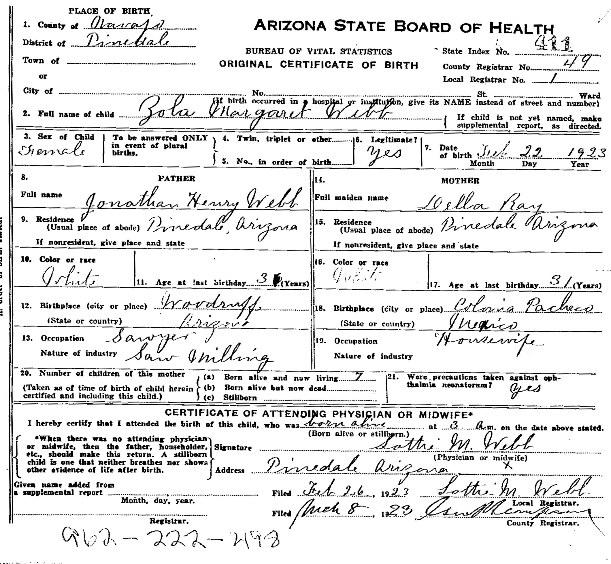

ARIZONA STATE BOARD OF HEALTH
BUREAU OF VITAL STATISTICS
ORIGINAL CERTIFICATE OF BIRTH
State Index No. 443 [last digit reading uncertain]
County Registrar No. 49
Local Registrar No. 1
PLACE OF BIRTH.
1. County of Navajo
District of Pinedale
Town of [blank]
or
City of [blank]
No. [blank] St. [blank] Ward [blank]
2. Full name of child Zola Margaret Webb
3. Sex of Child Female
4. Twin, triplet or other [blank]
5. No., in order of birth [blank]
6. Legitimate? yes
7. Date of birth July 22 1923
FATHER
8. Full name Jonathan Henry Webb
9. Residence (Usual place of abode) Pinedale, Arizona
10. Color or race White.
11. Age at last birthday 36 [second digit overwritten]
12. Birthplace (city or place) Woodruff
(State or country) Arizona
13. Occupation Sawyer
Nature of industry Saw Milling
MOTHER
14. Full maiden name Della Ray
15. Residence (Usual place of abode) Pinedale Arizona
16. Color or race White [faint]
17. Age at last birthday 31
18. Birthplace (city or place) Colonia Pacheco
(State or country) Mexico
19. Occupation Housewife.
Nature of industry [blank]
20. Number of children of this mother
(a) Born alive and now living 7
(b) Born alive but now dead [blank]
(c) Stillborn [blank]
21. Were precautions taken against oph-
thalmia neonatorum? yes
CERTIFICATE OF ATTENDING PHYSICIAN OR MIDWIFE*
I hereby certify that I attended the birth of this child, who was born alive
at 3 a.m. on the date above stated.
Signature Lottie M. Webb
(Physician or midwife)
Address Pinedale Arizona
[X beneath signature, purpose uncertain]
Given name added from a supplemental report [blank]
Filed Feb 26 1923 Lottie M. Webb
Local Registrar.
Filed March 8 1923 [illegible signature]
County Registrar.
[Bottom handwritten reference] 902 - 222 - 493 [digits uncertain]